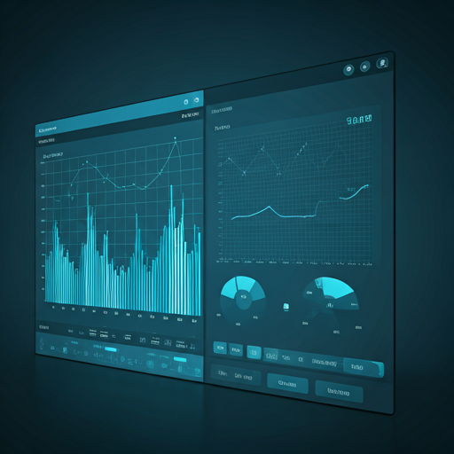

Community & Collaboration
FIMS Open Science Ecosystem
Collaborating for Sustainable Fisheries
Join a global network of scientists, developers, and researchers building the future of fisheries integrated modeling. Open source, collaborative, and peer-reviewed.
Ecosystem Pulse
Live activity across the FIMS development pipeline.
Recent GitHub Activity
fims / main
Loading recent activity…
Next Meeting
Likelihood Refactor with AI
Ways to Contribute
Whether you’re a seasoned modeler or a first-time open-source contributor, there’s a place for you in the FIMS community.
Code & Logic
Help implement new population dynamics features or optimize existing C++ and R libraries.
- Good first issues
- Bug triaging
Documentation
Clarify scientific methods, write tutorials, or improve our API documentation and guides.
- Wiki updates
- Use-case studies
Scientific Peer Review
Participate in working groups to validate the mathematical integrity of new modeling modules.
- Technical review
- Algorithm testing
Getting Involved
Follow these 4 simple steps to start contributing to the FIMS project today.

1
Introduce Yourself
Introduce yourself on the FIMS discussion board and start following discussions and the FIMS repository.
2
Go through the FIMS Vignettes
Go through the FIMS vignettes to understand the package’s functionality.
3
Review Contribution Guide
Read our technical standards for contributing to FIMS.
4
Come to Code Club and other FIMS trainings
Attend FIMS Code Clubs and trainings to learn more about contributing to FIMS and connect with other contributors. You don’t need to be an expert to attend - these are meant to be welcoming spaces for learning and collaboration!
5
Start Small
Pick a ‘Good First Issue’ on GitHub and submit your first pull request for peer review.
Community Highlights

Workshop 2024 Seattle, WA

Peer Review session Virtual Session

New Contributor Day Online Event

Governance Meeting Washington, DC